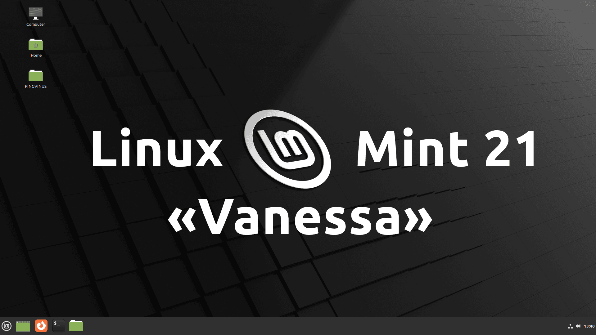

Linux Mint 21
Хвилинка історії:
Linux Mint - дистрибутив на пакетній базі Ubuntu. Простий в установці, підходить для новачків. Має три основні редакції: Cinnamon, MATE, Xfce, а також редакцію LMDE на базі Debian.
 Версія: 21
Дата релізу: 31 липня 2022
Попередній реліз: 20 від 3 січня 2022 (прес-реліз)
Linux Mint 21
Виконаний перехід на нову версію Cinnamon 5.4. Ключов зміни:
- Переробка віконного менеджера
- Налаштування дисплея перенесено в Cinnamon Control Center.
- Для малювання всіх вікон тепер використовується тема GTK/декоратори.
- Анімація вікон стала кращою

Новий компонент xapp-thumbnailers:
- AppImage
- ePub
- MP3 (обладинки)
- RAW
- Webp